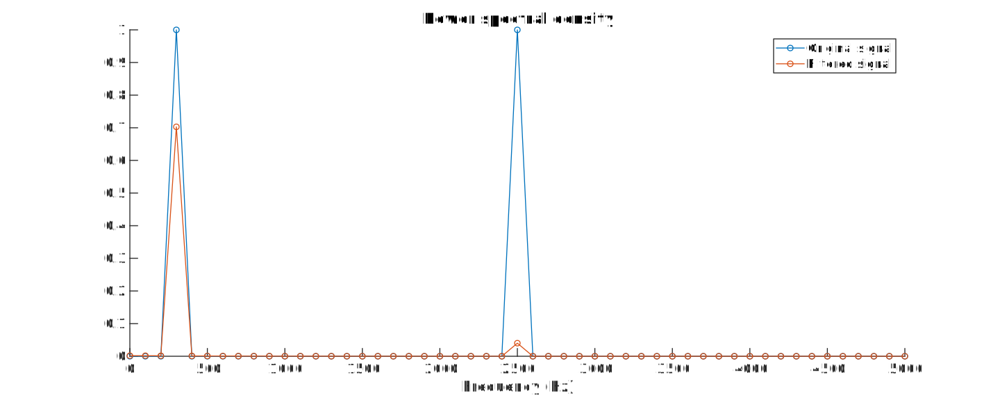
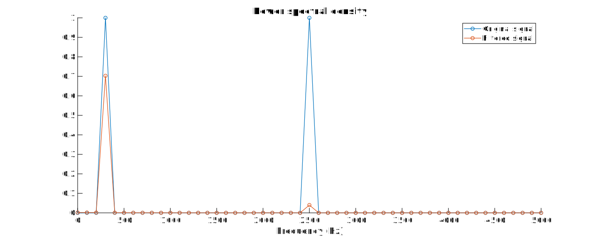

Filtering in MATLAB
Pieter PWe can use MATLAB to visualize the effects of the filter.
First, we generate a test signal that consists of two sine waves.%% Visualizationclose all; % Close all open figuresalpha = 0.25; % Filter factor of 1/4f_s = 10000; % 10 kHz sample frequencyf_1 = 300; % First sine wave with a frequency of 300 Hzf_2 = 2500; % Second sine wave with a frequency of 2.5 kHzsamples = 100; % Calculate/plot 100 samplesn = linspace(0,samples-1,samples); % Generate a vector with sample numberst = n / f_s; % Generate a vector with timesine_1 = sin(2*pi*f_1*t); % Calculate the (sampled) sine wavessine_2 = sin(2*pi*f_2*t);signal = (sine_1 + sine_2); % Mix the two sine waves togetherb = alpha; % Coefficients of the numerator of the transfer functiona = [1,-(1-alpha)]; % Coefficients of the denominator of the transfer functionfiltered = filter(b,a,signal); % Filter the signaloversample_continuous = 20; % Create a version with ten times more samples% to display the smooth, continuous signalsamples_continuous = oversample_continuous * samples;n_continuous = linspace(0, samples_continuous-1,samples_continuous) / oversample_continuous;t_continuous = n_continuous / f_s;sine_1_continuous = sin(2*pi*f_1*t_continuous);sine_2_continuous = sin(2*pi*f_2*t_continuous);signal_continuous = (sine_1_continuous + sine_2_continuous);% Plot the two original sine wavesfigure('pos',[0,0,1200,400]);hold on;plot(t_continuous, sine_1_continuous, 'k');plot(t_continuous, sine_2_continuous, 'k');title('Original sine waves');xlabel('Time (s)');ylabel('Amplitude');% Plot the continuous signal, the sampled version and the filtered outputfigure('pos',[0,0,1200,400]);hold on;plot(n_continuous, signal_continuous, 'k');plot(n, signal,'o');plot(n, filtered,'-o');title('Filtering the signal');xlabel('Sample');ylabel('Amplitude');legend('Original signal','Sampled signal','Filtered signal');% Apply a fast fourier transform and plot the spectra of the% original signal and of the filtered outputfigure('pos',[0,0,1000,400]);hold on;f = linspace(0,samples-1,samples)*f_s/samples;original_spectrum = (abs(fft(signal))*2/samples).^2;filtered_spectrum = (abs(fft(filtered))*2/samples).^2;plot(f(1:1+samples/2),original_spectrum(1:1+samples/2),'-o');plot(f(1:1+samples/2),filtered_spectrum(1:1+samples/2),'-o');title('Power spectral density');xlabel('Frequency (Hz)');legend('Original signal','Filtered signal');% Calculate the attenuation of the two sine wavesf_1_index = f_1*samples/f_s+1;A_1 = filtered_spectrum(f_1_index) / original_spectrum(f_1_index);A_1_dB = 10*log10(A_1);fprintf('Attenuation of first sine wave (%.0f Hz) = %.02f dB\n', f_1, A_1_dB);f_2_index = f_2*samples/f_s+1;A_2 = filtered_spectrum(f_2_index) / original_spectrum(f_2_index);A_2_dB = 10*log10(A_2);fprintf('Attenuation of second sine wave (%.0f Hz) = %.02f dB\n', f_2, A_2_dB);% Open the filter visualization toolfvtool(b,a,'Fs',f_s);%% WAV exportsamples = f_s*2; % 2 seconds of audion = linspace(0,samples-1,samples); % Generate a vector with sample numberst = n / f_s; % Generate a vector with timesine_1 = sin(2*pi*f_1*t); % Calculate the (sampled) sine wavessine_2 = sin(2*pi*f_2*t);signal = (sine_1 + sine_2)/2; % Mix the two sine waves togetherfiltered = filter(alpha,[1,-(1-alpha)],signal); % Filter the signalaudiowrite('original.wav',signal,f_s); % Export as audioaudiowrite('filtered.wav',filtered,f_s);
 Then we apply the filter to it and plot the result. You can clearly see how the high-frequency sine wave is attenuated. Also note the phase shift between the original and the filtered signal.
Then we apply the filter to it and plot the result. You can clearly see how the high-frequency sine wave is attenuated. Also note the phase shift between the original and the filtered signal.
 Finally, we can apply a fast fourier transform to inspect the frequency content.

Finally, we can apply a fast fourier transform to inspect the frequency content.

Attenuation of first sine wave (30 Hz) = -1.53 dB
Attenuation of second sine wave (250 Hz) = -13.97 dBIt can be used on music as well:
[signal,f_s] = audioread('telegraph_road_original.wav');alpha = 0.25; % Filter factor of 1/4b = alpha; % Coefficients of the numerator of the transfer functiona = [1,-(1-alpha)]; % Coefficients of the denominator of the transfer functionfiltered = filter(b,a,signal); % Filter the signalaudiowrite('telegraph_road_filtered.wav',filtered,f_s);